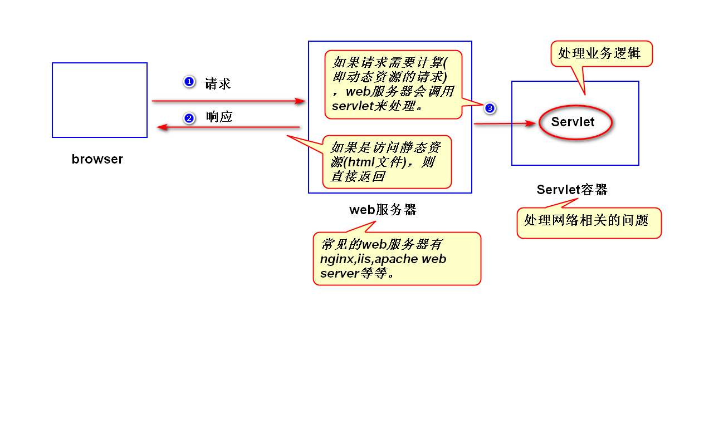
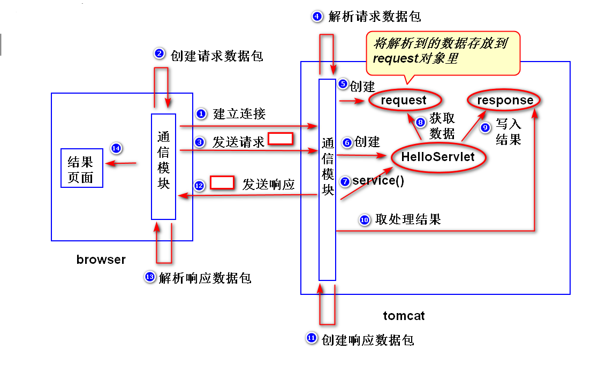
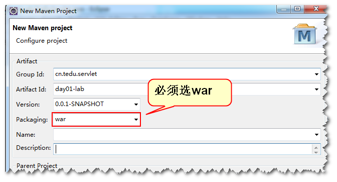
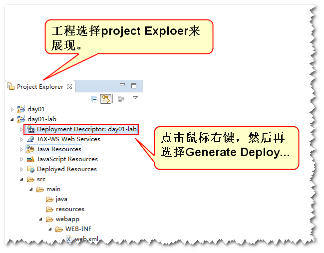
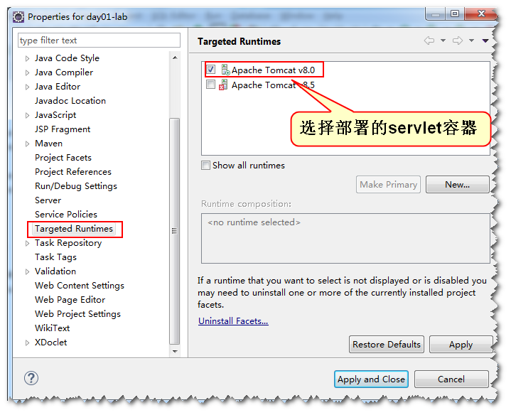
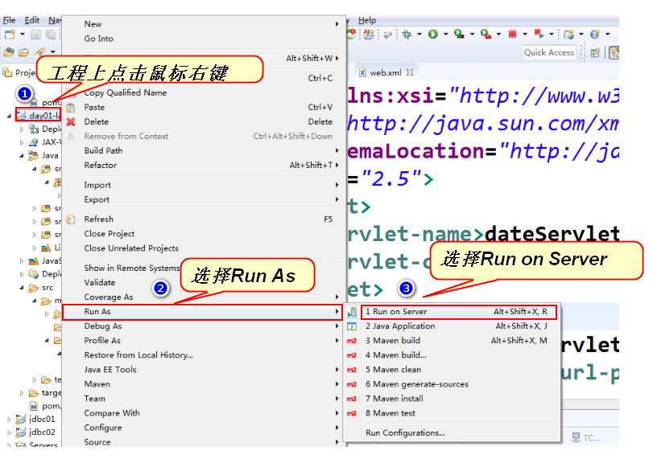
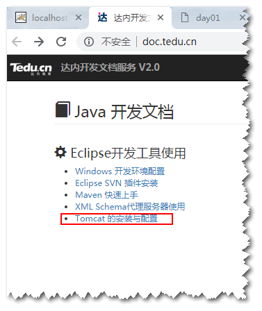

1.什么是Servlet?
sun公司制订的一种用来扩展web服务器功能的组件规范。

(1)扩展web服务器功能
web服务器只能够处理静态资源的请求（即需要事先将
静态页面写好），不能够处理动态资源的请求（即需要进行计算，生成动态页面），所以，需要扩展其功能。
可以使用Servlet来扩展web服务器功能，web服务器收到
请求之后，如果需要计算，则调用Servlet来处理。(2)组件规范
1)什么是组件?
符合规范、实现部分功能，并且需要部署到相应的容器当中才能运行的软件模块。
Servlet是一个组件，必须符合Servlet规范，并且需要部署到Servlet容器当中才能运行。2)什么是容器?
符合规范、提供组件运行环境的程序。
Servlet容器(比如Tomcat)为Servlet提供运行环境
(主要是提供网络相关的服务)2.如何写一个Servlet?
step1.写一个java类，实现Servlet接口或者继承HttpServlet。
step2.编译。
step3.打包。（即建立一个具有如下结构的文件夹）
appname
WEB-INF
classes (放.class文件)
lib (可选，放.jar文件)
web.xml (部署描述文件)step4.部署。
把step3创建好的文件夹拷贝到容器指定的位置。
注：
可以将step3创建好的文件夹压缩成".war"为后缀
的文件，然后拷贝。step5.启动容器，访问Servlet。
http://ip:port/appname/url-pattern
注:
url-pattern在web.xml中设置。3.Servlet是如何运行的?
比如，在浏览器地址栏输入http://localhost:8080/day01/hello

step1.浏览器依据ip和port建立连接。
step2.浏览器将相关数据放到请求数据包，然后将请求
数据包发送给服务器。
step3.服务器解析请求数据包，将解析到的结果放到
request对象里面，同时，创建一个response对象。
step4.服务器依据请求路径，创建Servlet对象，然后
调用该对象的service方法。
注:
开发人员只需要调用request对象的方法，就
可以获得请求数据包中的数据。类似的，只需要调用
response对象的方法，就可以将处理结果写到
response对象里面，容器会从response对象中取
出处理结果，然后创建响应数据包并发送给浏览器。
step5.容器从response对象中取出处理结果，然后创建
响应数据包并发送给浏览器。
step6.浏览器解析响应数据包，生成结果页面。4.常见错误
(1)404
a.含义：服务器依据请求路径，找不到对应的资源。
b.错误原因:
b1.请求路径写错。
b2.应用没有部署或者部署失败。(2)500
a.含义:服务器端程序运行发生问题。
b.错误原因:
b1.没有严格按照规范来写代码。
比如，没有继承HttpServlet或者实现Servlet
接口。又或者部署描述文件写错。
b2.代码写得不严谨。
比如，对请求参数值没有做任何检查就直接做类型
转换。(3)405
a.含义:服务器找不到处理方法。
b.错误原因:
没有正确override HttpServlet的service方法。练习：
写一个Servlet(比如DateServlet)，输出当前的
系统日期，比如”2018-10-25”
## 提示
step1.创建一个maven工程。注意三个细节:
细节1:选war包，如下图所示:

细节2:工程建完之后，默认没有带web.xml文件，需要
添加web.xml文件,如下图所示:

细节3:指定servlet容器，如下图所示:

step2.添加一个java类(DateServlet)
参考代码如下:
public class DateServlet extends HttpServlet{
public void service(
HttpServletRequest request,
HttpServletResponse response)
throws ServletException,IOException{
//生成日期信息
Date date = new Date();
SimpleDateFormat sdf =
new SimpleDateFormat("yyyy-MM-dd");
String dateInfo =
sdf.format(date);
//输出日期
response.setContentType("text/html");
PrintWriter out =
response.getWriter();
out.println(dateInfo);
out.close();
}
}step3. 在web.xml添加该Servlet的配置
参考配置如下:
<servlet>
<servlet-name>dateServlet</servlet-name>
<servlet-class>web.DateServlet</servlet-class>
</servlet>
<servlet-mapping>
<servlet-name>dateServlet</servlet-name>
<url-pattern>/date</url-pattern>
</servlet-mapping>step4.部署、运行

Tomcat的配置请参考doc.tedu.cn上的文档。

练习
写一个Servlet,计算一个人的BMI指数。
BMI指数 = 体重(公斤) / 身高(米) / 身高(米)